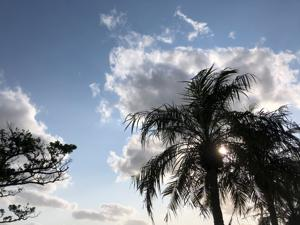

うるがいの話 ある日
最新: 急げば廻れかな【うるがいの話 ある日】とは 一日だけのプログです
『うるがいの話』の最新一日だけのプログで、通信料が少なく経済的だ。カニの画像をクリックすると全ての日付が載る『うるがいの話』サイトを表示します
|
|
【うるがいの話】 うるがい(ｳﾙｶﾞｲ urugai)とは、『もずくがに』の名前でとても大きくなります。 |
|---|---|
|
|
【カミマヤーの話】 猫のことを方言でマヤーといいます。カミマヤー（kamimayaa）とは、神の猫のことです。 |
|
【たながぁの音楽】 たながぁ（ﾀﾅｶﾞｰ tanagaa）とは手長えびのことで、何種類かあり大きいのは車 エビぐらいになります。 |

|
【ぶながぁの話】 ぶながぁ(ﾌﾞﾅｶﾞｰ bunagaa)とは、赤い髪の毛、赤い身体、そして身長は１ｍ２０ｃｍ ぐらい、川の蟹を食べているの目撃された。場所は沖縄県国頭郡大宜味村のと ある村僕の隣近所に住んでいる爺さんから、聞いた話です。 |
|
|
【ギーマの話】 ギーマ(giima)とは、山原の里山に咲くスズランに似た、 花を付けます。実は食べられます、 気が付くと口の周りが紫になっています。 |
2023年04月05日 (水）急げば廻れかな
17:20

大正琴の数字譜の文字フォントを作ることに調整している。ネットを参考にす
るものの、その記事の元なるソフトが古く（大概がそう）、最新のソフトでは
記事のとおりに出来ない。記事のソフトにあう古いバージョンを探し、仮想環
境にインストールする。ところがだｗｉｎｄｏｗｓ１０を入れている仮想環境
（Ｖｍｗａｒｅ）の画面解像度が低く、改善すべく色々調べてみたが諦める。
ふと、もう一つの仮想環境（ＶｉｒｔｕａｌＢｏｘ）のＷｉｎｄｏｗｓ８やＷ
ｉｎｄｏｗｓ７の解像度は問題ない。Ｖｍｗａｒｅは、ウィンドウズのＯＳと
相性が悪いという事にした。でＷｉｎｄｏｗｓ８で古いバージョンをインスー
トルする事に・・・、だんだん書くことに疲れてきた。かなり、とんで今、フ
ォントの元になるイラストを作るべく、ベクター画像編集ソフトＩｎｋｓｃａ
ｐｅ（インクスケープ）を２年以上も前（２０１９年９月）に購入した本をみ
ながら、イラストをマスターすべく頑張る。ふむふむ、急げば廻れの文脈にな
っていないが。その筋の人の苦労は続くのである。
１７時１６分 ビットコインの総資産 ￥１０、８６０（↑４４）